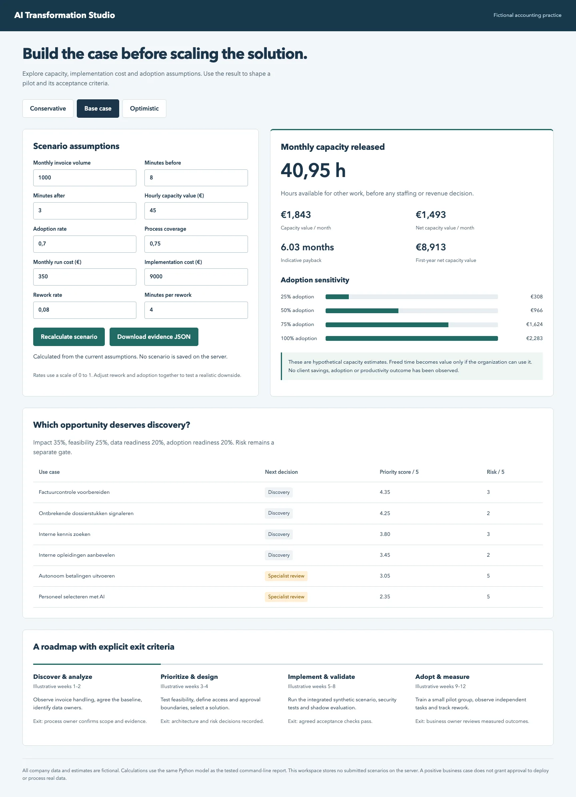
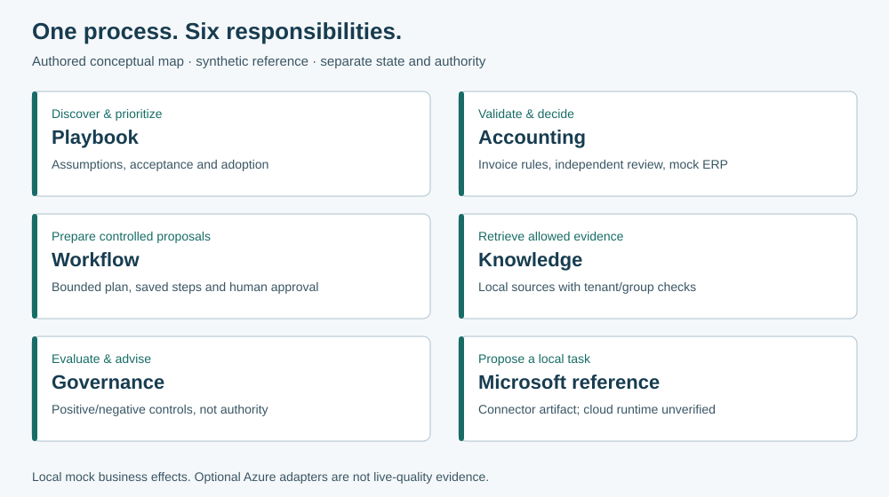
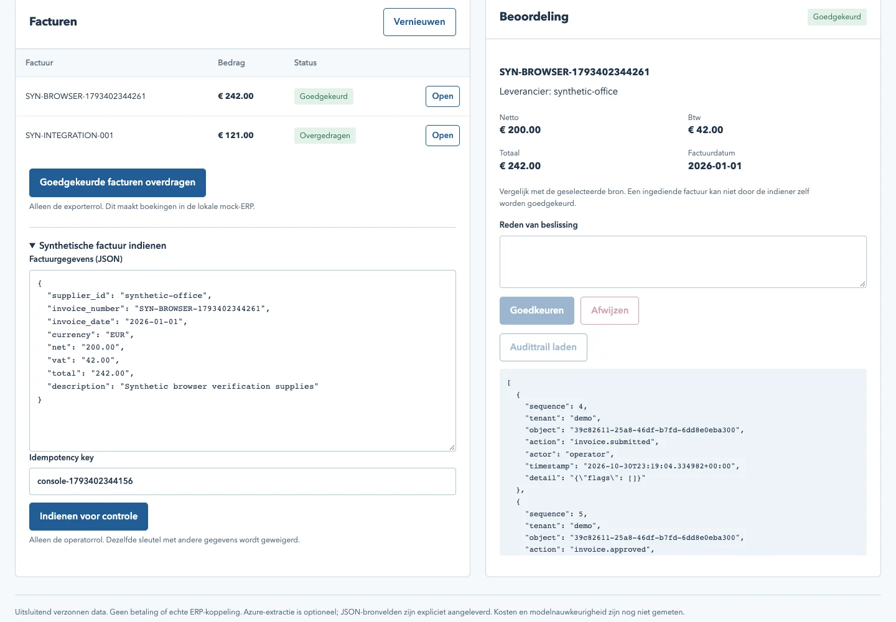
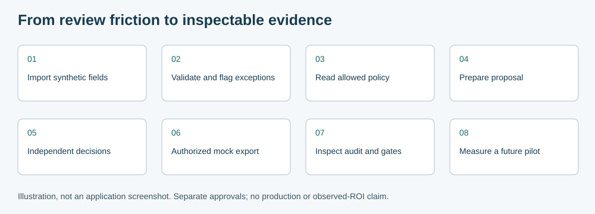

Build the case before scaling the solution.
A fictional accounting practice wants AI help with invoice review. This playbook walks the whole consulting route: discover the process, score six candidate use cases with risk as a separate gate, model capacity with explicit assumptions and their sensitivity, then plan a pilot with exit criteria. Five sibling repositories build the working components.

Why it exists
Most AI business cases are one optimistic number.
A vendor slide promises hours saved, nobody writes down the adoption rate or the rework it assumes, and a high-impact idea like "let AI execute payments" scores well enough to get funded.
Every figure comes from ten visible assumptions, with conservative, base and optimistic presets and an adoption sensitivity. Results are labelled as capacity, not cash. Use cases are scored on impact, feasibility, data and adoption readiness, while risk is a separate gate a high score cannot override.
Try it · runs in your browser
Change the assumptions yourself
This is the repository's own workspace. Its two API calls are answered in your browser by a JavaScript port of business_case.py, which CI checks against the Python model on 45 cases. Try the presets, then push adoption down and watch payback disappear.
Every figure is a hypothetical capacity scenario for a fictional practice, not realised savings. Download the evidence JSON to see the exact assumptions behind a result.
How it works
The consulting route, step by step
Discovery
Workshop, process map and baseline questions for invoice handling, with data owners identified before anything is built.
Prioritisation with a risk gate
Weighted score: impact 35%, feasibility 25%, data readiness 20%, adoption readiness 20%. Risk 4 or 5 sends a use case to specialist review, whatever its score.
A transparent capacity model
Volume × adoption × coverage × minutes saved, minus rework, valued per hour, minus run cost. Payback only when the net value is positive.
Pilot and adoption
A roadmap with exit criteria per phase, training and acceptance evidence, before any scale-up decision.
The flow, step by step
Screens
What it looks like
Diagrams and screenshots from the repository's career-launch assets.



Evidence
What is real, and what is not
REAL Built and verified
- Tested Python capacity model and prioritisation, with a reproducible report in
evidence/ - The scenario workspace, now also live on this site with a parity-checked browser port
- Process, requirements, risk and adoption documents for the case
- Five sibling repositories with working components and their own tests
SIMULATED Mocked or not built yet
- The accounting practice, volumes, costs and stakeholders are fictional
- No client engagement took place and no savings were realised
- Azure inference, OCR and a full Copilot Studio runtime are outside the verified scope
Run it yourself
Run it locally
Python 3.13, standard library only.
git clone https://github.com/phlppgdfry/ai-transformation-playbook
cd ai-transformation-playbook
python3 -m unittest discover -s tests -v
python3 -m consulting.business_case # writes evidence/business-case.json
python3 -m consulting.server # http://127.0.0.1:8086